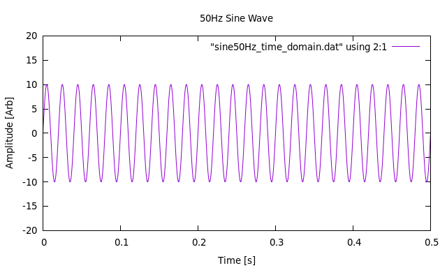
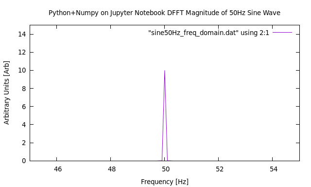
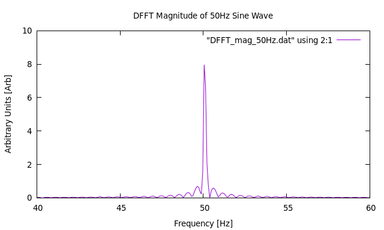

Formation of a 50Hz Sine Wave using Python+Numpy on Jupyter Notebook
Discussion:
We use Python together Numpy arrays and Matplotlib within a Jupyter Notebook to create a sine wave at 50Hz for 10 periods. We then plot the time domain graph of the sine wave, and then compute the Discretized Fast Fourier Transform using the Python libraries. The time domain data is then outputted to a file and used as an input for the DFFT Fortran program to computed the DFFT and plot its output with GNUPlot.
Introduction:
First, we start with a Python script written in Jupyter Notebook to generate a 50Hz sine wave, sampled at 44100Hz, for 10 periods, and save these raw data points to a file. The Jupyter Notebook is shown below.
Python code to generate a 50Hz sine wave sampled at 44100Hz.
Download the code by clicking the link below:
Python script file to generate 50Hz sine wave
We then run the code and obtain a time domain plot and a frequency domain plot. The results are plotted with GNUPlot:
Image of 50Hz Sine Wave Generated Using Python+Numpy on Jupyter Notebook and Plotted with GNUPlot

Download the image by clicking the link below:
Image of 50Hz sine wave

Download the image by clicking the link below:
Image of FFT of 50Hz sine wave
Obtaining Discretized Fast Fourier Transform of Raw Data File
Now that the Python+Numpy on Jupyter Notebook script has output time domain data elements into a file, these
data elements can now be fed into the FFTW3 DFFT algorithm. The algorithm is used within a Fortran 2003 program.
Click this link to see the Fortran 2003 DFFT code.
Running the Fortran 2003 DFFT Program and Obtaining Output Files
The Fortran 2003 code is compiled and run with the raw data text file as input. The resulting files
include the DFFT magnitude and phase.
Compile by typing: gfortran -o a.out data_file_FFTW_ver6.F03 -lfftw3
Run by typing: ./a.out outfile.dat DFFT_mag_file.dat DFFT_phase_file.dat sample_rate num_periods
where outfile.dat is the output of the Python script, DFFT_mag_file.dat is the DFFT magnitude file,
DFFT_phase_file.dat is the DFFT phase file,sample_rate is the rate of sampling of the input data file, and num_periods
is the number of periods of data in the input data file.
The line count can be obtained by typing: wc -l outfile.dat
The Output Files From the Fortran 2003 DFFT Program
After the Fortran 2003 DFFT program has been run correctly, magnitude and phase files should
appear.
The program output is verbose (for debug) purposes and the screen output is shown below:
The full text may be downloaded here.
Plots of the magnitude output file using GNUPlot
The magnitude output file is plotted with GNUPlot. A GNUPlot script file was created
to facilitate quality plotting.
GNUPlot script file
The GNUPlot script file may be downloaded by clicking here.
Run by typing gnuplot sine_wv_50Hz_DFFT_gnuplot_macro.txt or start GNUPlot and enter
load "sine_wv_50Hz_DFFT_gnuplot_macro.txt" at the gnuplot command prompt
Magnitude Plot

Discussion:
There appears to be a slight decrease in the peak of the magnitude of the DFFT plot. It appears to show a peak of around 8 units, rather than purely 10 units. Since other raw data inputs into the Fortran program produced results as expected, the skew may be related to the way the data were generated in Python+Numpy or the way it was saved into a text file. There also appears to be some secondary peaks that rapidly roll off on both sides of the main peak. This is most likely due to the FFTW3 algorithm responding to the discontinuities of the input data. More research is needed to find the causes.
Back to Current Projects - FFTW3